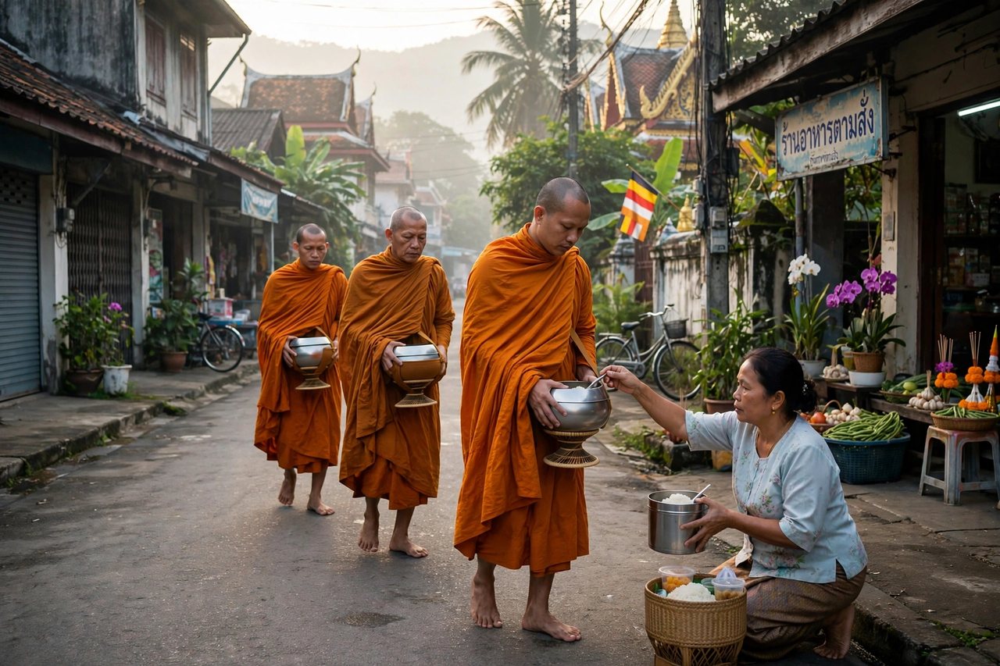

| Theravada | |
|---|---|
 Theravada monks on alms round | |
| Scripture | Pali Canon (Tipitaka) |
| Language | Pali |
| Regions | Sri Lanka, Myanmar, Thailand, Laos, Cambodia |
| Adherents | ~150 million |
| Ideal figure | The arahant |
Theravada (Pali: Theravāda, "Teaching of the Elders") is the oldest surviving school of Buddhism. It preserves its scriptures in the Pali Canon, which it regards as the most authoritative record of the Buddha's teaching, and it is the dominant form of Buddhism in Sri Lanka, Myanmar, Thailand, Laos and Cambodia, with significant minorities elsewhere in Asia and a growing presence in the West.
Theravada traces itself to the Sthavira ("Elders") side of the first schism in early Buddhism and, more concretely, to the tradition carried to Sri Lanka in the 3rd century BCE by Mahinda, son of the Mauryan emperor Ashoka — an event recorded in the Dipavamsa and Mahavamsa. At Aluvihare in Sri Lanka, in the 1st century BCE, the Pali Canon was first committed to writing. The commentator Buddhaghosa (5th century CE), working at the Mahavihara in Anuradhapura, systematised Theravada doctrine in works such as the Visuddhimagga ("Path of Purification").
From Sri Lanka the school spread to Burma and the Mon and Khmer worlds and then to Siam, becoming intertwined with kingship across mainland Southeast Asia. Periods of decline were repeatedly answered by reform and re-ordination missions between Sri Lanka and Southeast Asia. In the 19th and 20th centuries, Theravada modernised under colonial pressure — Sri Lanka's "Protestant Buddhism", Burma's mass lay meditation (vipassana) movement associated with Mahasi Sayadaw and S. N. Goenka, and Thailand's forest tradition of Ajahn Mun and Ajahn Chah all reshaped practice and carried it worldwide.
Theravada teaches the Four Noble Truths: life involves suffering (dukkha); suffering arises from craving; it can cease; and the Noble Eightfold Path leads to its cessation. Central concepts include impermanence (anicca), non-self (anatta) and dependent origination (paticca-samuppada). The goal of practice is liberation from rebirth — nirvana (Pali: nibbana) — attained by the arahant who has destroyed the defilements.
The Pali Canon (Tipitaka, "three baskets") comprises the Vinaya (monastic discipline), the Sutta Pitaka (discourses, including the Dhammapada) and the Abhidhamma, a systematic analysis of mind and matter. Practice rests on morality (sila), meditation (samadhi) and wisdom (panna), with merit-making, chanting and devotion woven into lay life. The monastic Sangha — monks in saffron robes, supported by lay alms — remains the institutional heart of Theravada societies, from Sri Lankan village temples to the novice ordinations of Thailand.